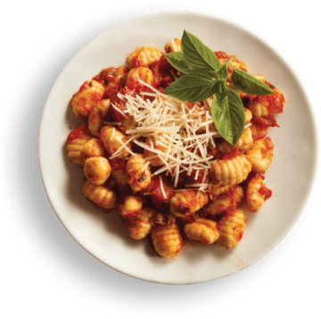
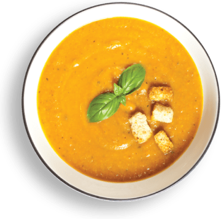
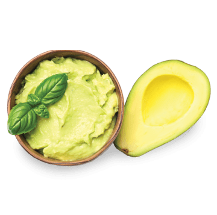
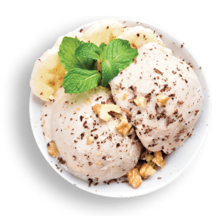

Cuidado Oncológico
Aqui, o alimento é aliado na busca por saúde e bem-estar durante o tratamento.
Guia de Receitas
Nossas receitas especiais

Nhoque de Banana Verde ao Molho Sugo
Biomassa de banana verde: rica em fibras, vitaminas e minerais. Ajuda no controle da glicose, colesterol e prisão de ventre.

Sopa de Mandioca com Carne
A mandioca é uma fonte de carboidrato complexo, amido e fibras, além de conter vitaminas e minerais que auxiliam a função imunológica e o sistema nervoso.

Salada de Alface ao Molho de Guacamole
O abacate é um fruto rico em gorduras monoinsaturadas, fibras, compostos carotenoides (antioxidantes), vitamina C, E e B5.

Sorvete de Banana com Cacau
O cacau é um poderoso alimento. Apresenta uma variedade de nutrientes antioxidantes, além de selênio e polifenóis. Contém cálcio, magnésio, zinco e vitaminas do complexo B.Sobre nós
Nosso projeto tem como objetivo ajudar pacientes oncológicos a se alimentarem de forma saudável e balanceada. Acreditamos que a nutrição é uma aliada essencial no cuidado e no bem-estar durante o tratamento do câncer. Por isso, desenvolvemos receitas nutritivas, práticas e pensadas especialmente para este momento.